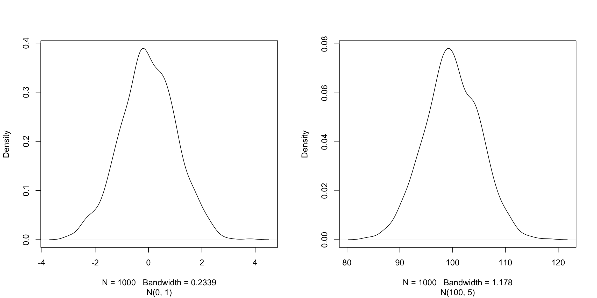

Learning Objectives
You can get output from R simply by typing math in the console:
3 + 5## [1] 812 / 7## [1] 1.714286However, to do useful and interesting things, we need to assign values to
objects. To create an object, we need to give it a name followed by the
assignment operator <-, and the value we want to give it:
weight_kg <- 55<- is the assignment operator. It assigns values on the right to
objects on the left. So, after executing x <- 3, the value of x is
3. The arrow can be read as 3 goes into x. For historical
reasons, you can also use = for assignments, but not in every
context. Because of the
slight
differences
in syntax, it is good practice to always use <- for assignments.
In RStudio, typing Alt + - (push Alt
at the same time as the - key) will write <- in a
single keystroke in a PC, while typing Option +
- (push Option at the same time as the
- key) does the same in a Mac.
Objects can be given any name such as x, current_temperature, or
subject_id. You want your object names to be explicit and not too
long. They cannot start with a number (2x is not valid, but x2
is). R is case sensitive (e.g., weight_kg is different from
Weight_kg). There are some names that cannot be used because they
are the names of fundamental functions in R (e.g., if, else,
for, see
here
for a complete list). In general, even if it’s allowed, it’s best to
not use other function names (e.g., c, T, mean, data, df,
weights). If in doubt, check the help to see if the name is already
in use. It’s also best to avoid dots (.) within an object name as in
my.dataset. There are many functions in R with dots in their names
for historical reasons, but because dots have a special meaning in R
(for methods) and other programming languages, it’s best to avoid
them. It is also recommended to use nouns for object names, and verbs
for function names. It’s important to be consistent in the styling of
your code (where you put spaces, how you name objects, etc.). Using a
consistent coding style makes your code clearer to read for your
future self and your collaborators. In R, some popular style guides
are Google’s, the
tidyverse’s style and the Bioconductor
style
guide. The
tidyverse’s is very comprehensive and may seem overwhelming at
first. You can install the
lintr package to
automatically check for issues in the styling of your code.
Objects vs. variables What are known as
objectsinRare known asvariablesin many other programming languages. Depending on the context,objectandvariablecan have drastically different meanings. However, in this lesson, the two words are used synonymously. For more information see: https://cran.r-project.org/doc/manuals/r-release/R-lang.html#Objects
When assigning a value to an object, R does not print anything. You can force R to print the value by using parentheses or by typing the object name:
weight_kg <- 55 # doesn't print anything
(weight_kg <- 55) # but putting parenthesis around the call prints the value of `weight_kg`## [1] 55weight_kg # and so does typing the name of the object## [1] 55Now that R has weight_kg in memory, we can do arithmetic with it. For
instance, we may want to convert this weight into pounds (weight in pounds is 2.2 times the weight in kg):
2.2 * weight_kg## [1] 121We can also change an object’s value by assigning it a new one:
weight_kg <- 57.5
2.2 * weight_kg## [1] 126.5This means that assigning a value to one object does not change the values of
other objects. For example, let’s store the animal’s weight in pounds in a new
object, weight_lb:
weight_lb <- 2.2 * weight_kgand then change weight_kg to 100.
weight_kg <- 100► Question
What do you think is the current content of the object weight_lb?
126.5 or 220?
Functions are “canned scripts” that automate more complicated sets of commands including operations assignments, etc. Many functions are predefined, can be made available by importing R packages (more on that later) or can be built by the user.
A function usually gets one or more inputs called arguments. Functions often (but not always) return a value. A typical example would be the function sqrt(). The input (the argument) must be a number, and the return value (in fact, the output) is the square root of that number. Executing a function (‘running it’) is called calling the function. An example of a function call is:
b <- sqrt(a)Here, the value of a is given to the sqrt() function, the sqrt() function
calculates the square root, and returns the value which is then assigned to
the object b. This function is very simple, because it takes just one argument.
The return ‘value’ of a function need not be numerical (like that of sqrt()),
and it also does not need to be a single item: it can be a set of things, or
even a dataset. We’ll see that when we read data files into R.
Arguments can be anything, not only numbers or filenames, but also other objects. Exactly what each argument means differs per function, and must be looked up in the documentation (see below). Some functions take arguments which may either be specified by the user, or, if left out, take on a default value: these are called options. Options are typically used to alter the way the function operates, such as whether it ignores ‘bad values’, or what symbol to use in a plot. However, if you want something specific, you can specify a value of your choice which will be used instead of the default.
Let’s try a function that can take multiple arguments: round().
round(3.14159)## [1] 3Here, we’ve called round() with just one argument, 3.14159, and it has
returned the value 3. That’s because the default is to round to the nearest
whole number. If we want more digits we can see how to do that by getting
information about the round function. We can use args(round) or look at the help for this function using ?round.
args(round)## function (x, digits = 0)
## NULL?roundWe see that if we want a different number of digits, we can
type digits=2 or however many we want.
round(3.14159, digits = 2)## [1] 3.14If you provide the arguments in the exact same order as they are defined you don’t have to name them:
round(3.14159, 2)## [1] 3.14And if you do name the arguments, you can switch their order:
round(digits = 2, x = 3.14159)## [1] 3.14It’s good practice to put the non-optional arguments (like the number you’re rounding) first in your function call, and to specify the names of all optional arguments. If you don’t, someone reading your code might have to look up the definition of a function with unfamiliar arguments to understand what you’re doing.
A vector is the most common and basic data type in R, and is pretty much
the workhorse of R. A vector is composed by a series of values. We can assign a series of values to a vector using
the c() function. For example we can create a vector of animal weights and assign
it to a new object weight_g:
weight_g <- c(50, 60, 65, 82)
weight_g## [1] 50 60 65 82A vector can also contain characters:
molecules <- c("dna", "rna", "protein")
molecules## [1] "dna" "rna" "protein"The quotes around “dna”, “rna”, etc. are essential here. Without the
quotes R will assume there are objects called dna, rna and
protein. As these objects don’t exist in R’s memory, there will be
an error message.
There are many functions that allow you to inspect the content of a
vector. length() tells you how many elements are in a particular vector:
length(weight_g)## [1] 4length(molecules)## [1] 3An important feature of a vector, is that all of the elements are the
same type of data. The function class() indicates the class (the
type of element) of an object:
class(weight_g)## [1] "numeric"class(molecules)## [1] "character"The function str() provides an overview of the structure of an
object and its elements. It is a useful function when working with
large and complex objects:
str(weight_g)## num [1:4] 50 60 65 82str(molecules)## chr [1:3] "dna" "rna" "protein"You can use the c() function to add other elements to your vector:
weight_g <- c(weight_g, 90) # add to the end of the vector
weight_g <- c(30, weight_g) # add to the beginning of the vector
weight_g## [1] 30 50 60 65 82 90In the first line, we take the original vector weight_g, add the
value 90 to the end of it, and save the result back into
weight_g. Then we add the value 30 to the beginning, again saving
the result back into weight_g.
We can do this over and over again to grow a vector, or assemble a dataset. As we program, this may be useful to add results that we are collecting or calculating.
An atomic vector is the simplest R data type and is a linear
vector of a single type. Above, we saw 2 of the 6 main atomic
vector types that R uses: "character" and "numeric" (or
"double"). These are the basic building blocks that all R objects
are built from. The other 4 atomic vector types are:
"logical" for TRUE and FALSE (the boolean data type)"integer" for integer numbers (e.g., 2L, the L indicates to R
that it’s an integer)"complex" to represent complex numbers with real and imaginary
parts (e.g., 1 + 4i) and that’s all we’re going to say about them"raw" for bitstreams that we won’t discuss furtherYou can check the type of your vector using the typeof() function
and inputting your vector as the argument.
Vectors are one of the many data structures that R uses. Other
important ones are lists (list), matrices (matrix), data frames
(data.frame), factors (factor) and arrays (array).
► Question
We’ve seen that atomic vectors can be of type character, numeric (or double), integer, and logical. But what happens if we try to mix these types in a single vector?
► Solution
► Question
What will happen in each of these examples? (hint: use class() to
check the data type of your objects):
num_char <- c(1, 2, 3, "a")
num_logical <- c(1, 2, 3, TRUE)
char_logical <- c("a", "b", "c", TRUE)
tricky <- c(1, 2, 3, "4")
► Solution
► Question
Why do you think it happens?
► Solution
► Question
How many values in combined_logical are "TRUE" (as a character) in
the following example:
num_logical <- c(1, 2, 3, TRUE)
char_logical <- c("a", "b", "c", TRUE)
combined_logical <- c(num_logical, char_logical)
► Solution
► Question
In R, we call converting objects from one class into another class coercion. These conversions happen according to a hierarchy, whereby some types get preferentially coerced into other types. Can you draw a diagram that represents the hierarchy of how these data types are coerced?
► Solution
If we want to extract one or several values from a vector, we must provide one or several indices in square brackets. For instance:
molecules <- c("dna", "rna", "peptide", "protein")
molecules[2]## [1] "rna"molecules[c(3, 2)]## [1] "peptide" "rna"We can also repeat the indices to create an object with more elements than the original one:
more_molecules <- molecules[c(1, 2, 3, 2, 1, 4)]
more_molecules## [1] "dna" "rna" "peptide" "rna" "dna" "protein"Note: R indices start at 1. Programming languages like Fortran, MATLAB, Julia, and R start counting at 1, because that’s what human beings typically do. Languages in the C family (including C++, Java, Perl, and Python) count from 0 because that’s simpler for computers to do.
Finally, it is also possible to get all the elements of a vector except some specified elements using negative indices:
molecules ## all molecules## [1] "dna" "rna" "peptide" "protein"molecules[-1] ## all but the first one## [1] "rna" "peptide" "protein"molecules[-c(1, 3)] ## all but 1st/3rd ones## [1] "rna" "protein"molecules[c(-1, -3)] ## all but 1st/3rd ones## [1] "rna" "protein"► Question
Here is another example of a character vector called fruits:
fruits <- c("apple", "orange", "grape")sort() (see ?sort).
► Solution
Another common way of subsetting is by using a logical vector. TRUE will
select the element with the same index, while FALSE will not:
weight_g <- c(21, 34, 39, 54, 55)
weight_g[c(TRUE, FALSE, TRUE, TRUE, FALSE)]## [1] 21 39 54Typically, these logical vectors are not typed by hand, but are the output of other functions or logical tests. For instance, if you wanted to select only the values above 50:
## will return logicals with TRUE for the indices that meet
## the condition
weight_g > 50## [1] FALSE FALSE FALSE TRUE TRUE## so we can use this to select only the values above 50
weight_g[weight_g > 50]## [1] 54 55You can combine multiple tests using & (both conditions are true,
AND) or | (at least one of the conditions is true, OR):
weight_g[weight_g < 30 | weight_g > 50]## [1] 21 54 55weight_g[weight_g >= 30 & weight_g == 21]## numeric(0)Here, < stands for “less than”, > for “greater than”, >= for
“greater than or equal to”, and == for “equal to”. The double equal
sign == is a test for numerical equality between the left and right
hand sides, and should not be confused with the single = sign, which
performs variable assignment (similar to <-).
A common task is to search for certain strings in a vector. One could
use the “or” operator | to test for equality to multiple values, but
this can quickly become tedious. The function %in% allows you to
test if any of the elements of a search vector are found:
molecules <- c("dan", "rna", "protein", "peptide")
molecules[molecules == "rna" | molecules == "dna"] # returns both rna and dna## [1] "rna"molecules %in% c("rna", "dna", "metabolite", "peptide", "glycerol")## [1] FALSE TRUE FALSE TRUEmolecules[molecules %in% c("rna", "dna", "metabolite", "peptide", "glycerol")]## [1] "rna" "peptide"► Question
Based on the height vector below, select heights that are above 190 or below or equal to 170
height <- c(163, 189, 210, 177, 168, 192, 170)
► Solution
► Question
Based on the fruits vector below:
fruits <- c("apple", "orange", "grape", "melon", "pineapple",
"banana", "grape", "orange", "melon")
► Solution
► Question
Can you figure out why "four" > "five" returns TRUE?
► Solution
It is possible to name each element of a vector. The code chunk below show a initial vector without any names, how names are set, and retrieved.
x <- c(1, 5, 3, 5, 10)
names(x) ## no names## NULLnames(x) <- c("A", "B", "C", "D", "E")
names(x) ## now we have names## [1] "A" "B" "C" "D" "E"When a vector has names, it is possible to access elements by their name, in addition to their index.
x[c(1, 3)]## A C
## 1 3x[c("A", "C")]## A C
## 1 3As R was designed to analyze datasets, it includes the concept of
missing data (which is uncommon in other programming
languages). Missing data are represented in vectors as NA (Not Available).
When doing operations on numbers, most functions will return NA if
the data you are working with include missing values. This feature
makes it harder to overlook the cases where you are dealing with
missing data. You can add the argument na.rm = TRUE to calculate
the result while ignoring the missing values.
heights <- c(2, 4, 4, NA, 6)
mean(heights)## [1] NAmax(heights)## [1] NAmean(heights, na.rm = TRUE)## [1] 4max(heights, na.rm = TRUE)## [1] 6If your data include missing values, you may want to become familiar
with the functions is.na(), na.omit(), and complete.cases(). See
below for examples.
## Extract those elements which are not missing values.
heights[!is.na(heights)]## [1] 2 4 4 6## Returns the object with incomplete cases removed.
## The returned object is an atomic vector of type `"numeric"`
## (or `"double"`).
na.omit(heights)## [1] 2 4 4 6
## attr(,"na.action")
## [1] 4
## attr(,"class")
## [1] "omit"## Extract those elements which are complete cases.
## The returned object is an atomic vector of type `"numeric"`
## (or `"double"`).
heights[complete.cases(heights)]## [1] 2 4 4 6► Question
heights <- c(63, 69, 60, 65, NA, 68, 61, 70, 61, 59, 64, 69, 63, 63, NA, 72, 65, 64, 70, 63, 65)median() to calculate the median of the heights vector.
► Solution
There exists some functions to generate vectors of different type. To
generate a vector of numerics, one can use the numerics()
constructor, providing the length of the output vector as
parameter. The values will be initialised with 0.
numeric(3)## [1] 0 0 0numeric(10)## [1] 0 0 0 0 0 0 0 0 0 0Note that if we ask for a vector of numerics of length 0, we obtain exactly that:
numeric(0)## numeric(0)There are similar constructors for characters and logicals, named
character() and logical() respectively.
► Question
What are the defaults for character and logical vectors?
► Solution
The rep function allow to repeat a value a certain number of
times. If we want to initiate a vector of numerics of length 5 with
the value -1, for example, we could do the following:
rep(-1, 5)## [1] -1 -1 -1 -1 -1Similarly, to generate a vector populated with missing values, which is often a good way to start, without setting assumptions on the data to be collected:
rep(NA, 5)## [1] NA NA NA NA NArep can take vectors of any length as input (above, we used vectors
of length 1) and any type. For example, if we want to repeat the
values 1, 2 and 3 five times, we would do the following:
rep(c(1, 2, 3), 5)## [1] 1 2 3 1 2 3 1 2 3 1 2 3 1 2 3► Question
What if we wanted to repeat the values 1, 2 and 3 five times, but
obtain five 1s, five 2s and five 3s in that order? There are two
possibilities - see ?rep or ?sort for help.
► Solution
Another very useful function is seq, to generate a sequence of
numbers. For example, to generate a sequence of integers from 1 to 20
by steps of 2, one would use:
seq(from = 1, to = 20, by = 2)## [1] 1 3 5 7 9 11 13 15 17 19The default value of by is 1 and, given that the generate of a
sequence of one value to another with steps of 1 is frequently used,
there’s a shortcut:
seq(1, 5, 1)## [1] 1 2 3 4 5seq(1, 5) ## default by## [1] 1 2 3 4 51:5## [1] 1 2 3 4 5To generate a sequence of numbers from 1 to 20 of final length of 3, one would use:
seq(from = 1, to = 20, length.out = 3)## [1] 1.0 10.5 20.0► Question
Generate a sequence of numbers
► Solution
A last group of useful functions are those that generate random
data. The first one, sample, generates a random permutation of
another vector. For example, to draw a random order to 10 students
oral example, I first assign each student a number from 1 to then (for
instance based on the alphabetic order of their name) and then:
sample(1:10)## [1] 9 4 7 1 2 5 3 10 6 8Without further arguments, sample will return a permutation of all
elements of the vector. If I want a random sample of a certain size, I
would set this value as second argument. Below, I sample 5 random
letters from the alphabet contained in the pre-defined letters vector:
sample(letters, 5)## [1] "s" "a" "u" "x" "j"If I wanted an output larger than the input vector, or being able to
draw some elements multiple times, I would need to set the replace
argument to TRUE:
sample(1:5, 10, replace = TRUE)## [1] 2 1 5 5 1 1 5 5 2 2► Question
When trying the functions above out, you will have realised that the
samples are indeed random and that one doesn’t get the same
permutation twice. To be able to reproduce these random draws, one can
set the random number generation seed manually with set.seed()
before drawing the random sample.
Test this feature with your neighbour. First draw two random
permutations of 1:10 independently and observe that you get
different results.
Now set the seed with, for example, set.seed(123) and repeat the
random draw. Observe that you now get the same random draws.
Repeat by setting a different seed.
► Solution
The last function we are going to see is rnorm, that draws a random
sample from a normal distribution. Two normal distributions of means 0
and 100 and standard deviations 1 and 5, noted noted N(0, 1) and
N(100, 5), are shown below
Figure 3.1: Two normal distributions: N(0, 1) on the left and N(100, 5) on the right.
The three arguments, n, mean and sd, define the size of the
sample, and the parameters of the normal distribution, i.e the mean
and its standard deviation. The defaults of the latter are 0 and 1.
rnorm(5)## [1] 0.69641761 0.05351568 -1.31028350 -2.12306606 -0.20807859rnorm(5, 2, 2)## [1] 1.3744268 -0.1164714 2.8344472 1.3690969 3.6510983rnorm(5, 100, 5)## [1] 106.45636 96.87448 95.62427 100.71678 107.12595Now that we have learned how to write scripts, and the basics of R’s data structures, we are ready to start working with larger data, and learn about data frames.
For other distributions, see ?Distributions.
Page built: 2021-09-24
3.2 Comments
The comment character in R is
#, anything to the right of a#in a script will be ignored by R. It is useful to leave notes, and explanations in your scripts.RStudio makes it easy to comment or uncomment a paragraph: after selecting the lines you want to comment, press at the same time on your keyboard Ctrl + Shift + C. If you only want to comment out one line, you can put the cursor at any location of that line (i.e. no need to select the whole line), then press Ctrl + Shift + C.
► Question
What are the values after each statement in the following?